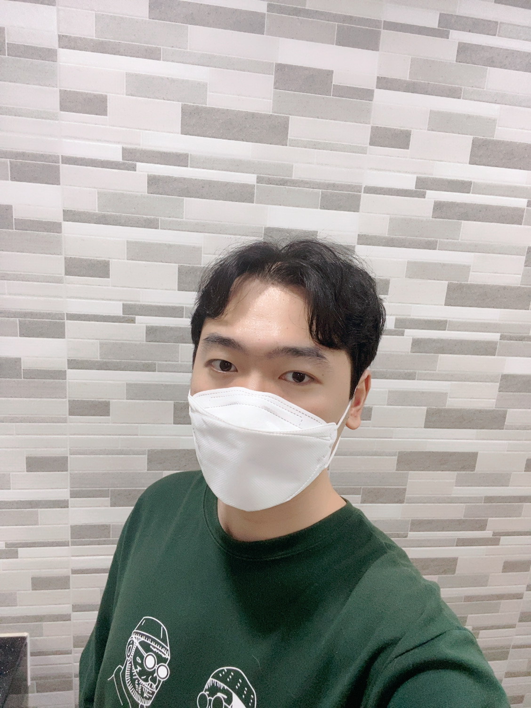

Node.js
변정민
📫 cvy5375@gmail.com
🛠 github.com/ByunJungMin
📔 cvy5375.tistory.com
소개보기
MBTI
ISTP
만능 재주꾼
창조와 문제 해결을 위한 이해, 그리고 실행 착오와
실질적인 경험을 통해 아이디어를 탐색합니다.
다른 이들이 그들의 과제에 흥미를 보이는 것을 좋아합니다.
타인을 잘 도우며 그들의 경험을 다른 이들과 공유하는 것을 좋아하기도
하는 ISTP는 특히나 그들이 아끼는 사람일수록 더욱 그러합니다. 이들이
인구의 고작 5%만이 차지합니다.
상황파악 능력과 손재주가 좋은데 사람과 관계 맺는 것을 어려워합니다.
새로운 사람 보다 오래된 인연을 아끼는 타입으로 내 사람에게 정말 잘하는 편으로 알려져 있습니다.
객관적으로 살펴본 자신의 장점
협업을 하는 과정에서의 자신의 스타일
프로젝트를 시작하기 전에 우선 어떤 디자인으로 갈지 의견을 종합하고 여러가지 좋은 아이디어들이 있을 때 종합하여 방향을 제시하며, 수정하면 좋은 부분에 대한 의견제시를 적극적으로 하는 편입니다.
나만의 플레이 리스트
방명록